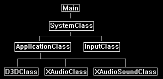

In this tutorial we will look at the XAudio2 sound API.
XAudio2 is the next version of DirectSound.
It is similar to DirectSound in most respects but it adds some new features that are very useful when you want to get more control over the audio output.
The first main advantage is that you can now add DSP (digital signal processing) effects to your sounds on the fly.
So, with DirectSound you would need to store a sound in its dry format, and also store a second version that had reverb added for example.
Now you can just store the dry version of the sound and then add reverb using XAudio2 to the sound live whenever you want to.
The second thing XAudio2 can do is submix.
This is similar to using multiple shaders to create an advanced effect, and now you will be able to do the same thing with sound.
For example, you could take just a subset of sounds that are currently being played and add reverb to them and fade them out slowly, while not affecting the rest of the sounds playing.
There are also more features such as supporting 7.1 surround sound and more.
You can review all the new features on the XAudio2 programming guide site.
For this XAudio2 tutorial we are going to mimic the original rastertek DirectSound tutorial and just play a single 44.1KHz stereo sound.
Framework
The framework has the new XAudioClass and XAudioSoundClass.
These perform the same functions that the DirectSoundClass and SoundClass did from tutorial 55.

Xaudioclass.h
////////////////////////////////////////////////////////////////////////////////
// Filename: xaudioclass.h
////////////////////////////////////////////////////////////////////////////////
#ifndef _XAUDIOCLASS_H_
#define _XAUDIOCLASS_H_
The XAudio2 library must be linked, and the header for it must be included as well.
/////////////
// LINKING //
/////////////
#pragma comment(lib, "Xaudio2.lib")
//////////////
// INCLUDES //
//////////////
#include <xaudio2.h>
#include <stdio.h>
////////////////////////////////////////////////////////////////////////////////
// Class name: XAudioClass
////////////////////////////////////////////////////////////////////////////////
class XAudioClass
{
public:
XAudioClass();
XAudioClass(const XAudioClass&);
~XAudioClass();
bool Initialize();
void Shutdown();
IXAudio2* GetXAudio2();
private:
We require interfaces to XAudio2 and a master voice.
IXAudio2* m_xAudio2;
IXAudio2MasteringVoice* m_masterVoice;
};
#endif
Xaudioclass.cpp
///////////////////////////////////////////////////////////////////////////////
// Filename: xaudioclass.cpp
///////////////////////////////////////////////////////////////////////////////
#include "xaudioclass.h"
XAudioClass::XAudioClass()
{
m_xAudio2 = 0;
m_masterVoice = 0;
}
XAudioClass::XAudioClass(const XAudioClass& other)
{
}
XAudioClass::~XAudioClass()
{
}
bool XAudioClass::Initialize()
{
HRESULT result;
To use XAudio2 we need to initialize COM in multithreaded mode.
If you have already initialized COM multithreading with DirectX 11 elsewhere then you don't have to do it here.
But if you have initialized COM elsewhere and have not done so in multithreaded mode, then you will need to comment that out and use this initialize here instead.
// Initialize COM first.
result = CoInitializeEx(nullptr, COINIT_MULTITHREADED);
if(FAILED(result))
{
return false;
}
Next, we create our XAudio2 instance by calling XAudio2Create with the XAUDIO2_USE_DEFAULT_PROCESSOR option.
Note that the official documentation says to use XAUDIO2_DEFAULT_PROCESSOR, but this is for older versions and you should not use that flag anymore.
// Create an instance of the XAudio2 engine.
result = XAudio2Create(&m_xAudio2, 0, XAUDIO2_USE_DEFAULT_PROCESSOR);
if(FAILED(result))
{
return false;
}
Finally, we create our mastering voice.
This is the final output stage in the audio graph that then sends the data to our audio output device.
// Create the mastering voice.
result = m_xAudio2->CreateMasteringVoice(&m_masterVoice);
if(FAILED(result))
{
return false;
}
return true;
}
void XAudioClass::Shutdown()
{
// Release the master voice.
if(m_masterVoice)
{
m_masterVoice->DestroyVoice();
m_masterVoice = 0;
}
// Release the Xaudio2 interface.
if(m_xAudio2)
{
m_xAudio2->Release();
m_xAudio2 = 0;
}
// Uninitialize COM.
CoUninitialize();
return;
}
We create a GetXAudio2 function to easily get the interface to the XAudio2 system.
IXAudio2* XAudioClass::GetXAudio2()
{
return m_xAudio2;
}
Xaudiosoundclass.h
The XAudioSoundClass is the same as our SoundClass from tutorial 55.
However, it now sets up the sound data in a format required for XAudio2 processing.
////////////////////////////////////////////////////////////////////////////////
// Filename: xaudiosoundclass.h
////////////////////////////////////////////////////////////////////////////////
#ifndef _XAUDIOSOUNDCLASS_H_
#define _XAUDIOSOUNDCLASS_H_
///////////////////////
// MY CLASS INCLUDES //
///////////////////////
#include "xaudioclass.h"
////////////////////////////////////////////////////////////////////////////////
// Class name: XAudioSoundClass
////////////////////////////////////////////////////////////////////////////////
class XAudioSoundClass
{
private:
Since we will be loading a .WAV file the same headers are still used.
struct RiffWaveHeaderType
{
char chunkId[4];
unsigned long chunkSize;
char format[4];
};
struct SubChunkHeaderType
{
char subChunkId[4];
unsigned long subChunkSize;
};
struct FmtType
{
unsigned short audioFormat;
unsigned short numChannels;
unsigned long sampleRate;
unsigned long bytesPerSecond;
unsigned short blockAlign;
unsigned short bitsPerSample;
};
public:
XAudioSoundClass();
XAudioSoundClass(const XAudioSoundClass&);
~XAudioSoundClass();
We will have the same functions as the SoundClass had except that they require the XAudio2 interface as an input instead of DirectSound.
bool LoadTrack(IXAudio2*, char*, float);
void ReleaseTrack();
bool PlayTrack();
bool StopTrack();
private:
bool LoadStereoWaveFile(IXAudio2*, char*, float);
void ReleaseWaveFile();
private:
XAudio2 does not use its own sound buffers anymore.
So now we need to maintain the wave data in our own unsigned char array.
We also need to fill out a XAUDIO2_BUFFER struct to define the audio format and point to our unsigned char wave data.
And finally, we require a source voice to represent this sound when submitting it to the master voice.
unsigned char* m_waveData;
XAUDIO2_BUFFER m_audioBuffer;
IXAudio2SourceVoice* m_sourceVoice;
};
#endif
Xaudiosoundclass.cpp
///////////////////////////////////////////////////////////////////////////////
// Filename: xaudiosoundclass.cpp
///////////////////////////////////////////////////////////////////////////////
#include "xaudiosoundclass.h"
XAudioSoundClass::XAudioSoundClass()
{
m_waveData = 0;
m_sourceVoice = 0;
}
XAudioSoundClass::XAudioSoundClass(const XAudioSoundClass& other)
{
}
XAudioSoundClass::~XAudioSoundClass()
{
}
The loading/unloading and playing/stopping functions work the same as the tutorial 55 functions.
bool XAudioSoundClass::LoadTrack(IXAudio2* XAudio2, char* filename, float volume)
{
bool result;
// Load the wave file for the sound.
result = LoadStereoWaveFile(XAudio2, filename, volume);
if(!result)
{
return false;
}
return true;
}
void XAudioSoundClass::ReleaseTrack()
{
// Destory the voice.
if(m_sourceVoice)
{
m_sourceVoice->DestroyVoice();
m_sourceVoice = 0;
}
// Release the wave data only after voice destroyed.
ReleaseWaveFile();
return;
}
bool XAudioSoundClass::PlayTrack()
{
HRESULT result;
// Play the track.
result = m_sourceVoice->Start(0, XAUDIO2_COMMIT_NOW);
if(FAILED(result))
{
return false;
}
return true;
}
bool XAudioSoundClass::StopTrack()
{
HRESULT result;
// Play the track.
result = m_sourceVoice->Stop(0);
if(FAILED(result))
{
return false;
}
// Flush the buffers to remove them and reset the audio position to the beginning.
result = m_sourceVoice->FlushSourceBuffers();
if(FAILED(result))
{
return false;
}
// Resubmit the buffer to the source voice after the reset so it is prepared to play again.
result = m_sourceVoice->SubmitSourceBuffer(&m_audioBuffer);
if(FAILED(result))
{
return false;
}
return true;
}
The LoadStereoWaveFile works mostly the same as the tutorial 55 LoadStereoWaveFile.
But you will see at the end we don't create a sound buffer.
bool XAudioSoundClass::LoadStereoWaveFile(IXAudio2* xAudio2, char* filename, float volume)
{
FILE* filePtr;
RiffWaveHeaderType riffWaveFileHeader;
SubChunkHeaderType subChunkHeader;
FmtType fmtData;
WAVEFORMATEX waveFormat;
int error;
unsigned long long count;
long seekSize;
unsigned long dataSize;
bool foundFormat, foundData;
HRESULT result;
Parse the .WAV file and load the audio data into our m_waveData array the same as before.
// Open the wave file in binary.
error = fopen_s(&filePtr, filename, "rb");
if(error != 0)
{
return false;
}
// Read in the riff wave file header.
count = fread(&riffWaveFileHeader, sizeof(riffWaveFileHeader), 1, filePtr);
if(count != 1)
{
return false;
}
// Check that the chunk ID is the RIFF format.
if((riffWaveFileHeader.chunkId[0] != 'R') || (riffWaveFileHeader.chunkId[1] != 'I') || (riffWaveFileHeader.chunkId[2] != 'F') || (riffWaveFileHeader.chunkId[3] != 'F'))
{
return false;
}
// Check that the file format is the WAVE format.
if((riffWaveFileHeader.format[0] != 'W') || (riffWaveFileHeader.format[1] != 'A') || (riffWaveFileHeader.format[2] != 'V') || (riffWaveFileHeader.format[3] != 'E'))
{
return false;
}
// Read in the sub chunk headers until you find the format chunk.
foundFormat = false;
while(foundFormat == false)
{
// Read in the sub chunk header.
count = fread(&subChunkHeader, sizeof(subChunkHeader), 1, filePtr);
if(count != 1)
{
return false;
}
// Determine if it is the fmt header. If not then move to the end of the chunk and read in the next one.
if((subChunkHeader.subChunkId[0] == 'f') && (subChunkHeader.subChunkId[1] == 'm') && (subChunkHeader.subChunkId[2] == 't') && (subChunkHeader.subChunkId[3] == ' '))
{
foundFormat = true;
}
else
{
fseek(filePtr, subChunkHeader.subChunkSize, SEEK_CUR);
}
}
// Read in the format data.
count = fread(&fmtData, sizeof(fmtData), 1, filePtr);
if(count != 1)
{
return false;
}
// Check that the audio format is WAVE_FORMAT_PCM.
if(fmtData.audioFormat != WAVE_FORMAT_PCM)
{
return false;
}
// Check that the wave file was recorded in stereo or mono format depending on what we are expecting the file to be.
if(fmtData.numChannels != 2)
{
return false;
}
// Check that the wave file was recorded at a sample rate of 44.1 KHz.
if(fmtData.sampleRate != 44100)
{
return false;
}
// Ensure that the wave file was recorded in 16 bit format.
if(fmtData.bitsPerSample != 16)
{
return false;
}
// Seek up to the next sub chunk.
seekSize = subChunkHeader.subChunkSize - 16;
fseek(filePtr, seekSize, SEEK_CUR);
// Read in the sub chunk headers until you find the data chunk.
foundData = false;
while(foundData == false)
{
// Read in the sub chunk header.
count = fread(&subChunkHeader, sizeof(subChunkHeader), 1, filePtr);
if(count != 1)
{
return false;
}
// Determine if it is the data header. If not then move to the end of the chunk and read in the next one.
if((subChunkHeader.subChunkId[0] == 'd') && (subChunkHeader.subChunkId[1] == 'a') && (subChunkHeader.subChunkId[2] == 't') && (subChunkHeader.subChunkId[3] == 'a'))
{
foundData = true;
}
else
{
fseek(filePtr, subChunkHeader.subChunkSize, SEEK_CUR);
}
}
// Store the size of the data chunk.
dataSize = subChunkHeader.subChunkSize;
// Create a buffer to hold the wave file data.
m_waveData = new unsigned char[dataSize];
// Read in the wave file data into the newly created buffer.
count = fread(m_waveData, 1, dataSize, filePtr);
if(count != dataSize)
{
return false;
}
// Close the file once done reading.
error = fclose(filePtr);
if(error != 0)
{
return false;
}
Set the wave format the same as tutorial 55.
// Set the wave format for the buffer.
waveFormat.wFormatTag = WAVE_FORMAT_PCM;
waveFormat.nSamplesPerSec = fmtData.sampleRate;
waveFormat.wBitsPerSample = fmtData.bitsPerSample;
waveFormat.nChannels = fmtData.numChannels;
waveFormat.nBlockAlign = (waveFormat.wBitsPerSample / 8) * waveFormat.nChannels;
waveFormat.nAvgBytesPerSec = waveFormat.nSamplesPerSec * waveFormat.nBlockAlign;
waveFormat.cbSize = 0;
Fill in our new audio buffer struct pointing to the m_waveData array.
Since we don't use direct sound arrays anymore, we will just be pointing to our unsigned char array that we loaded the .WAV data into.
// Fill in the audio buffer struct.
m_audioBuffer.AudioBytes = dataSize; // Size of the audio buffer in bytes.
m_audioBuffer.pAudioData = m_waveData; // Buffer containing audio data.
m_audioBuffer.Flags = XAUDIO2_END_OF_STREAM; // Tell the source voice not to expect any data after this buffer.
m_audioBuffer.LoopCount = 0; // Not looping. Change to XAUDIO2_LOOP_INFINITE for looping.
m_audioBuffer.PlayBegin = 0;
m_audioBuffer.PlayLength = 0;
m_audioBuffer.LoopBegin = 0;
m_audioBuffer.LoopLength = 0;
m_audioBuffer.pContext = NULL;
Here we create the "voice" which represents our .WAV sound in the sound graph.
When we create the voice, we use as input the wave format we filled out.
This way the voice knows what to expect in terms of audio data formatting.
// Create the source voice for this buffer.
result = xAudio2->CreateSourceVoice(&m_sourceVoice, &waveFormat, 0, XAUDIO2_DEFAULT_FREQ_RATIO, NULL, NULL, NULL);
if(FAILED(result))
{
return false;
}
Now that the voice has been created, we can submit our audio buffer struct so the voice has a pointer to our m_waveData array.
// Submit the audio buffer to the source voice.
result = m_sourceVoice->SubmitSourceBuffer(&m_audioBuffer);
if(FAILED(result))
{
return false;
}
// Set volume of the buffer.
m_sourceVoice->SetVolume(volume);
return true;
}
void XAudioSoundClass::ReleaseWaveFile()
{
// Release the secondary sound buffer.
if(m_waveData)
{
delete [] m_waveData;
m_waveData = 0;
}
return;
}
Applicationclass.h
////////////////////////////////////////////////////////////////////////////////
// Filename: applicationclass.h
////////////////////////////////////////////////////////////////////////////////
#ifndef _APPLICATIONCLASS_H_
#define _APPLICATIONCLASS_H_
/////////////
// GLOBALS //
/////////////
const bool FULL_SCREEN = false;
const bool VSYNC_ENABLED = true;
const float SCREEN_NEAR = 0.3f;
const float SCREEN_DEPTH = 1000.0f;
///////////////////////
// MY CLASS INCLUDES //
///////////////////////
#include "d3dclass.h"
#include "inputclass.h"
We include the new XAudioClass and XAudioSoundClass headers in our ApplicationClass header file.
#include "xaudioclass.h"
#include "xaudiosoundclass.h"
////////////////////////////////////////////////////////////////////////////////
// Class name: ApplicationClass
////////////////////////////////////////////////////////////////////////////////
class ApplicationClass
{
public:
ApplicationClass();
ApplicationClass(const ApplicationClass&);
~ApplicationClass();
bool Initialize(int, int, HWND);
void Shutdown();
bool Frame(InputClass*);
private:
bool Render();
private:
D3DClass* m_Direct3D;
Here we define our XAudioClass object and a XAudioSoundClass object.
XAudioClass* m_XAudio;
XAudioSoundClass* m_TestSound1;
};
#endif
Applicationclass.cpp
////////////////////////////////////////////////////////////////////////////////
// Filename: applicationclass.cpp
////////////////////////////////////////////////////////////////////////////////
#include "applicationclass.h"
ApplicationClass::ApplicationClass()
{
m_Direct3D = 0;
m_XAudio = 0;
m_TestSound1 = 0;
}
ApplicationClass::ApplicationClass(const ApplicationClass& other)
{
}
ApplicationClass::~ApplicationClass()
{
}
bool ApplicationClass::Initialize(int screenWidth, int screenHeight, HWND hwnd)
{
char soundFilename[128];
bool result;
// Create and initialize the Direct3D object.
m_Direct3D = new D3DClass;
result = m_Direct3D->Initialize(screenWidth, screenHeight, VSYNC_ENABLED, hwnd, FULL_SCREEN, SCREEN_DEPTH, SCREEN_NEAR);
if(!result)
{
MessageBox(hwnd, L"Could not initialize Direct3D.", L"Error", MB_OK);
return false;
}
We create and initialize our new XAudioClass here.
// Create and initialize the XAudio object.
m_XAudio = new XAudioClass;
result = m_XAudio->Initialize();
if(!result)
{
MessageBox(hwnd, L"Could not initialize XAudio.", L"Error", MB_OK);
return false;
}
After that we create our XAudioSoundClass object called m_TestSound1.
We will use the same wave file from tutorial 55 named sound01.wav.
// Create and initialize the test sound object.
m_TestSound1 = new XAudioSoundClass;
strcpy_s(soundFilename, "../Engine/data/sound01.wav");
result = m_TestSound1->LoadTrack(m_XAudio->GetXAudio2(), soundFilename, 1.0f);
if(!result)
{
MessageBox(hwnd, L"Could not initialize test sound object.", L"Error", MB_OK);
return false;
}
We will then use XAudio2 to play our stereo sound.
// Play the test sound.
result = m_TestSound1->PlayTrack();
if(!result)
{
return false;
}
return true;
}
void ApplicationClass::Shutdown()
{
// Release the test sound object.
if(m_TestSound1)
{
// Stop the sound if it was still playing.
m_TestSound1->StopTrack();
// Release the test sound object.
m_TestSound1->ReleaseTrack();
delete m_TestSound1;
m_TestSound1 = 0;
}
// Release the XAudio object.
if(m_XAudio)
{
m_XAudio->Shutdown();
delete m_XAudio;
m_XAudio = 0;
}
// Release the Direct3D object.
if(m_Direct3D)
{
m_Direct3D->Shutdown();
delete m_Direct3D;
m_Direct3D = 0;
}
return;
}
bool ApplicationClass::Frame(InputClass* Input)
{
bool result;
// Check if the escape key has been pressed, if so quit.
if(Input->IsEscapePressed() == true)
{
return false;
}
// Render the final graphics scene.
result = Render();
if(!result)
{
return false;
}
return true;
}
bool ApplicationClass::Render()
{
// Clear the buffers to begin the scene.
m_Direct3D->BeginScene(0.25f, 0.25f, 0.25f, 1.0f);
// Present the rendered scene to the screen.
m_Direct3D->EndScene();
return true;
}
Summary
We have now initialized and used XAudio2 to play a stereo .WAV sound file.
To Do Exercises
1. Compile and run the program. You should hear the stereo sound play. Press escape to quit.
2. Load one of your own stereo wave files and play it.
Source Code
Source Code and Data Files: dx11win10tut57_src.zip